Talent Management Solutions For Frito Lay
2023-04-14
Introduction
Welcome to this Attrition analysis, we are acting as a talent management analytics company for Fortune 100 company Frito Lay to predict employee turnover. As our lead data scientist, I will analyze existing employee data to identify the top three factors contributing to attrition and job role-specific trends. The analysis will involve robust experimentation and appropriate visualization in R, with a predictive model built to forecast employee turnover.
We have also developed algorithm simulator App for easier digestion of future data set into streamlined process. Users will be able to voluntarily upload the data set and choose the corresponding ML model to find out the best fitting results for future attrition analysis. The R shiny app is made available below.

Prepration
loading needed packages
###loading libraries
library(tidyverse)
library(dplyr)
library(ggplot2)
library(plotly)
library(caret)
library(class)
library(e1071)
library(GGally)
library(ROCit)Data Preparation
Loading correct data set into R
Looking for Na Values and outlier
#load data set
data1=read.csv(file = "CaseStudy2-data.csv")
#sum(is.na(data1))
#Changing Col order
data1=data1[c(3,1,2,4:36)]
#Checking the imbalance of the data set
#table(data1$Attrition)
# 730/140 = 5:1
# Attrition is roughly 0.2/1Data Prepration Step 2
Factorize data set for easier interpretation and analysis
For categorical variables, taking the approach to factorize first
Split the data into people who left and people who stayed
Then conducting T-test against all other columns
Finding out the least P value to determine its significance
#factorize the data and scale it. Adding column response assign it with Yes and No
data_scaled =
data1 %>%
mutate_if(is.character, as.factor) %>%
mutate_if(is.factor, ~as.integer(factor(.)) - 1)
preproc=preProcess(data_scaled)
data_scaled=predict(preproc,data_scaled)
data_scaled=data_scaled%>%
mutate(response = ifelse(as.numeric(factor(data1[,"Attrition"])) == 1, "Yes", "No"))
#Conducting T-Test on all other columns
Ttest=data_scaled%>%
select(-{"Attrition"}) %>%
select_if(~ !all(is.na(.)))%>%
pivot_longer(cols = -response, names_to = "variable", values_to = "value") %>%
group_by(variable) %>%
summarize(pvalue = sprintf("%.15f", t.test(value ~ response)$p.value))%>%
filter(pvalue <= 0.05)
dataX = data_scaled %>%
select(Ttest$variable, Attrition)
if (!is.factor(dataX[["Attrition"]])) {
dataX[["Attrition"]] = as.numeric(factor(dataX[["Attrition"]]))-1
}
data2=dataX
data3=data2Exploratory Data Analysis
Dive deep into Job sanctification
What are the top three factors leading people to leave
Intricate relationship between each factor to another
Mechanics to prevent higher attrition in the future
#EDA
data1_summary <- data1 %>%
group_by(JobRole) %>%
summarize(mean_JobSatisfaction = mean(as.numeric(JobSatisfaction)))
ggplot(data1_summary, aes(x = JobRole, y = mean_JobSatisfaction, fill = JobRole)) +
geom_bar(stat = "identity") +
labs(title = "Job Satisfaction by Job Role",
subtitle = "Comparison of Job Satisfaction Levels by Job Role",
x = "Job Role",
y = "Job Satisfaction",
fill = "Job Role") +
ggthemes::theme_clean() +
theme(axis.text.x = element_text(size = 10, angle = 45, hjust = 1),
panel.spacing.x = unit(2, "cm")) +
guides(fill = FALSE)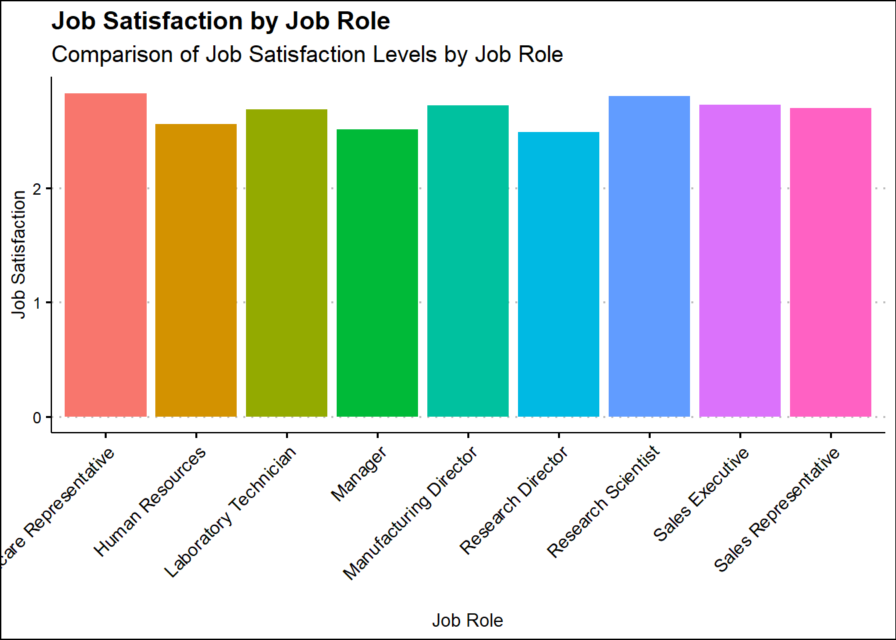
- Comment: we can see that the most satisfied job roles are sales representative and research scientist
# plot Job Satisfaction by MaritalStatus
data1_summary2 <- data1 %>%
group_by(MaritalStatus) %>%
summarize(mean_JobSatisfaction = mean(as.numeric(JobSatisfaction)))
ggplot(data1_summary2, aes(x = MaritalStatus, y = mean_JobSatisfaction, fill = MaritalStatus)) +
geom_bar(stat = "identity") +
labs(title = "Job Satisfaction by Marital Status",
subtitle = "Comparison of Job Satisfaction Levels by Marital Status",
x = "Marital Status",
y = "Mean Job Satisfaction",
fill = "Marital Status") +
ggthemes::theme_clean() +
theme(axis.text.x = element_text(size = 10, angle = 45, hjust = 1),
panel.spacing.x = unit(2, "cm")) +
guides(fill = FALSE)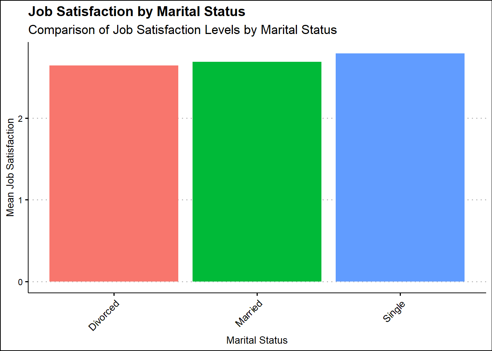
- Comment: single workers are likely to be more satisfied with their
current role
data1_summary2 <- data1 %>%
group_by(JobSatisfaction) %>%
summarize(mean_JobSatisfaction = mean(as.numeric(DistanceFromHome)))
ggplot(data1_summary2, aes(x = JobSatisfaction, y = mean_JobSatisfaction, fill = JobSatisfaction)) +
geom_bar(stat = "identity") +
labs(title = "Job Satisfaction by DistanceFromHome",
subtitle = "Comparison of Job Satisfaction Levels by DistanceFromHome",
x = "DistanceFromHome",
y = "Job Satisfaction",
fill = "DistanceFromHome") +
ggthemes::theme_clean() +
theme(axis.text.x = element_text(size = 10, angle = 45, hjust = 1),
panel.spacing.x = unit(2, "cm")) +
guides(fill = FALSE)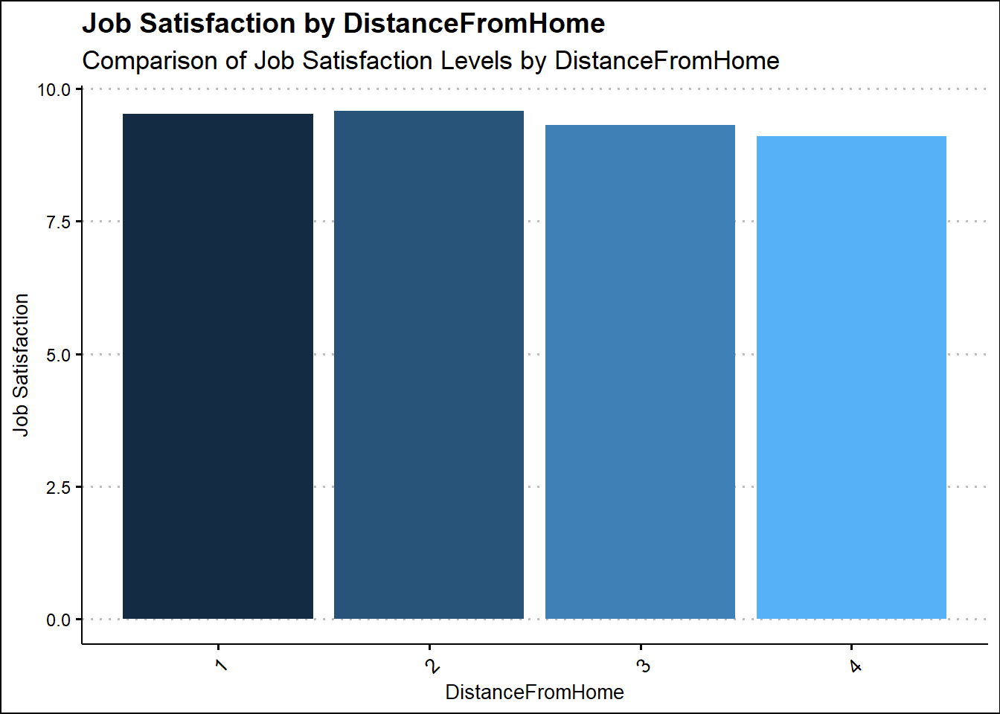
- Comment: the more distant you are from work the less satisfied you
are
ggplot(data2, aes(x = Attrition, y = MonthlyIncome)) +
geom_point(color = "darkblue", size = 3, alpha = 0.5) +
labs(title = "Attrition vs Monthly Income",
subtitle = "Scatterplot of Attrition with Monthly Income",
x = "Attrition",
y = "Monthly Income") +
ggthemes::theme_clean() +
geom_smooth(method = "lm", se = FALSE, color = "red", size = 1.2) +
theme(plot.title = element_text(size = 20, face = "bold", hjust = 0.5),
plot.subtitle = element_text(size = 16, hjust = 0.5),
axis.title = element_text(size = 14),
axis.text = element_text(size = 12),
legend.position = "none")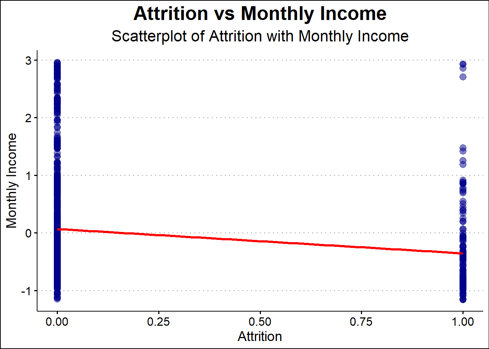
- Comment: monthly income is negatively correlated with attrition,
increase monthly income is liley to reduce attrition rate
ggplot(data2, aes(x = Attrition, y = OverTime)) +
geom_point(color = "#c44e52") +
labs(title = "Attrition vs OverTime",
subtitle = "Scatterplot of Attrition with OverTime",
x = "Attrition",
y = "OverTime") +
geom_smooth(method = "lm", se = FALSE, color = "darkblue", size = 1.2) +
theme_bw()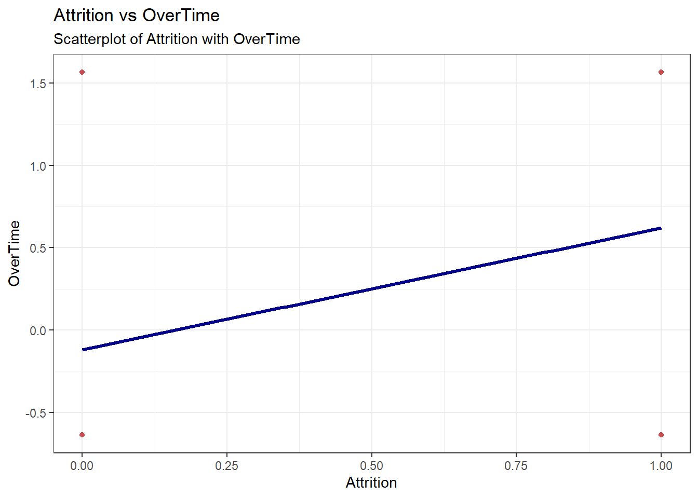
- Comment: attrition seems to be positively correlated with attrition,
more overtime could mean more attrition
# Plot a scatterplot of TotalWorkingYears by Attrition
ggplot(data2, aes(x = Attrition, y = TotalWorkingYears)) +
geom_point(color = "#3c78d8") +
labs(title = "Attrition vs Total Working Years",
subtitle = "Scatterplot of Attrition with Total Working Years",
x = "Attrition",
y = "Total Working Years") +
geom_smooth(method = "lm", se = FALSE, color = "#c44e52", size = 1.2) +
theme_bw()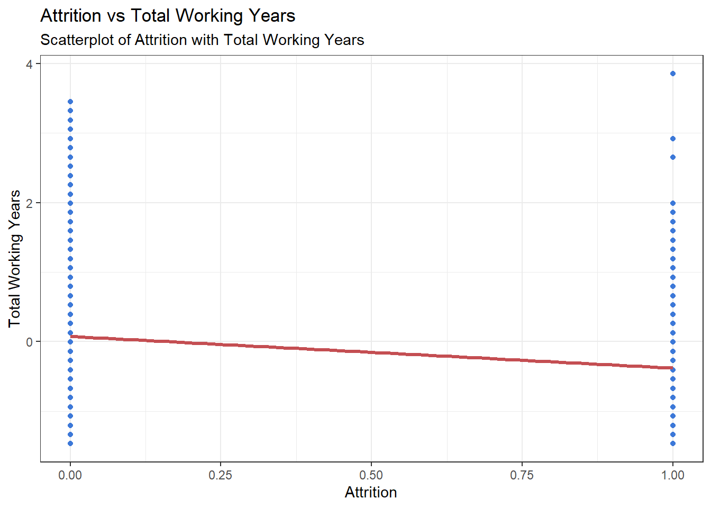
- Comment: total working years within the company is likely to reduce
attrition rate
ggplot(data2, aes(x = Attrition, y = JobInvolvement)) +
geom_point(fill = "#4c72b0", alpha = 0.7) +
labs(title = "Attrition vs Job Involvement",
subtitle = "Comparison of JobInvolvement Levels with Job Involvement",
x = "Attrition",
y = "Job Involvement") +
geom_smooth(method = "lm", se = FALSE, color = "darkblue", size = 1.2)+
theme_minimal() +
theme(plot.title = element_text(color = "#222222", size = 24, face = "bold"),
plot.subtitle = element_text(color = "#444444", size = 16),
axis.title = element_text(color = "#222222", size = 14),
axis.text = element_text(color = "#222222", size = 12),
panel.grid.major = element_blank(),
panel.grid.minor = element_blank(),
panel.border = element_blank(),
legend.position = "none",
plot.background = element_rect(fill = "white"),
panel.background = element_rect(fill = "white"))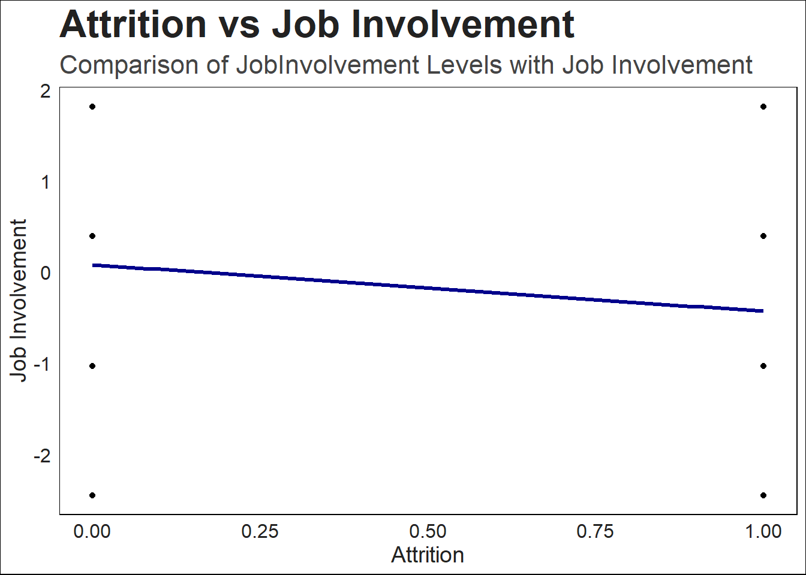
- Comment: fostering a good job involvement (communication and
relationship around the workplace) could reduce attrition rate.
ggplot(data2, aes(x = Attrition, y = MaritalStatus, color = factor(MaritalStatus))) +
geom_point(size = 3, alpha = 0.5) +
labs(title = "Attrition vs Marital Status",
subtitle = "Scatterplot of Attrition with Marital Status",
x = "Attrition",
y = "Marital Status") +
geom_smooth(method = "lm", se = FALSE, color = "darkblue", size = 1.2) +
theme_bw() +
scale_color_manual(values = c("#1F77B4", "#FF7F0E", "#2CA02C"),
name = "Marital Status",
labels = c("Divorced", "Married", "Single"))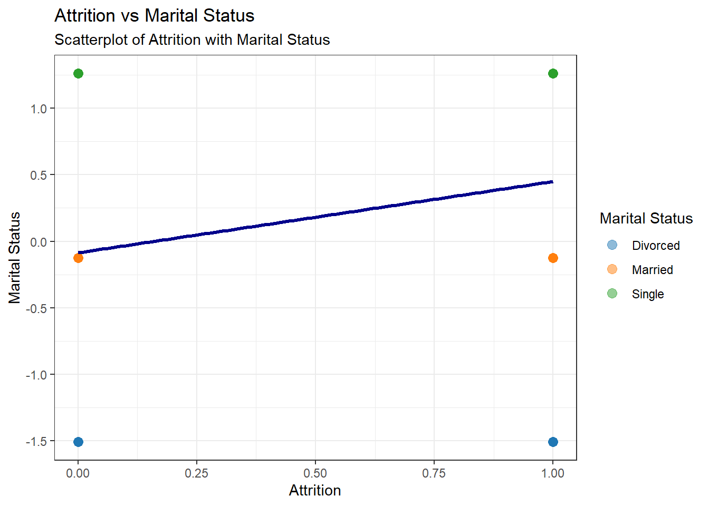
- Comment: Single workers could be more likely to leave the company
than married and divorced workers
Fitting the model (KNN)
Ran the experiment for at least 45000 iterations
Deep dive into hyper parameter tuning
Finding out the best hypermarkets to use for future predictions
#Saving a different sets of labels for Navie Bays analysis
#pvalues[9,4]="Yes"
#pvalues[17,4]="Yes"
#pvalues[19,4]="Yes"
#factorsNB=pvalues%>%filter(NB == "Yes")
#dataZ2=dataZ2[,factorsNB$columns]
#dataZ2=dataZ2[c(2,1,3:20)]
###split data sets into 70% test set and 30% training set
sample_rows=sample(dim(data2)[1],dim(data2)[1]*0.7)
train_sample=data2[sample_rows,]
test_sample=data2[-sample_rows,]
#classify using KNN external validation
classification=knn(train_sample[,1:17],test_sample[,1:17],train_sample$Attrition,k=25,prob=TRUE)
#table(test_sample$Attrition,classification)
cm=confusionMatrix(table(test_sample$Attrition,classification))
probs <- ifelse(classification == "0", attributes(classification)$prob, 1 - attributes(classification)$prob)
new_class2 <- ifelse(probs > 0.8, "0", "1")
a=rocit(score=as.numeric(as.factor(new_class2)),class=as.numeric(test_sample$Attrition))
#cm
#a$AUC
#plot(a)
#######################################KNN
#KNN
#KNN
# Set seed for reproducibility
set.seed(123)
data3 <- data2
sample_rows <- sample(dim(data3)[1], dim(data3)[1] * 0.7)
train_sample <- data3[sample_rows, ]
test_sample <- data3[-sample_rows, ]
# Initialize empty data frame to store AUC values
auc_df_knn <- data.frame(iters = integer(),
ks = integer(),
thresholds = numeric(),
aucs = numeric(),
stringsAsFactors = FALSE)
# Loop through 100 iterations
for (i in 1:100) {
# Randomly sample training data
sample_rows <- sample(dim(data3)[1], dim(data3)[1] * 0.7)
train_sample <- data3[sample_rows, ]
test_sample <- data3[-sample_rows, ]
# Loop through hyperparameters k = 1 to 50
for (k in 1:50) {
# Loop through thresholds from 0.1 to 0.9
for (threshold in seq(0.1, 0.9, 0.1)) {
# Fit KNN model and make predictions
knn_fit <- knn(train = train_sample[,1:17], test = test_sample[,1:17], cl = train_sample$Attrition, k = k, prob = TRUE)
probs2 <- ifelse(knn_fit == "0", attributes(knn_fit)$prob, 1 - attributes(knn_fit)$prob)
new_class2 <- ifelse(probs2 > threshold, "0", "1")
# Calculate AUC and add to auc_df_knn
auc <- rocit(score = as.numeric(as.factor(new_class2)), class = as.numeric(test_sample$Attrition))$AUC
auc_df_knn <- rbind(auc_df_knn, data.frame(iters = i, ks = k, thresholds = threshold, aucs = auc))
}
}
}
avg_auc_knn <- aggregate(aucs ~ ks + thresholds, data = auc_df_knn, FUN = mean)
# Plot average AUC vs. k, with lines for each value of threshold
ggplot(avg_auc_knn, aes(x = ks, y = aucs, group = thresholds, color = thresholds)) +
geom_line() +
xlab("k") +
ylab("Average AUC") +
ggtitle("Average AUC by k and Threshold") +
theme_bw() +
theme(plot.title = element_text(hjust = 0.5))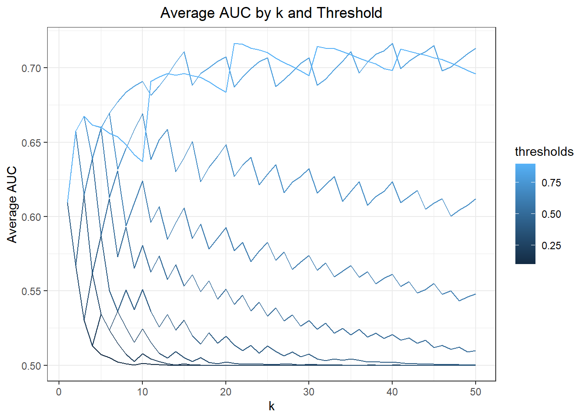
# Print first 10 rows of auc_df_knn
#head(auc_df_knn, 10)
####knncv
####Doing the same thing with Knn internal cross validation
data3=data2
sample_rows <- sample(dim(data3)[1], dim(data3)[1] * 0.7)
train_sample <- data3[sample_rows, ]
test_sample <- data3[-sample_rows, ]
knncv <- knn.cv(train = train_sample[,1:17], cl = as.numeric(train_sample$Attrition), k =21, prob = TRUE)
probs = ifelse(knncv == "0",attributes(knncv)$prob, 1- attributes(knncv)$prob)
NewClass = ifelse(probs > 0.9, "0", "1")
#table(NewClass,train_sample$Attrition)
#confusionMatrix(table(NewClass,train_sample$Attrition))
#a=rocit(score=as.numeric(as.factor(NewClass)),class=as.numeric(train_sample$Attrition))
#a$AUC
#plot(a)
# Set seed for reproducibility
set.seed(123)
data3 <- data2
sample_rows <- sample(dim(data3)[1], dim(data3)[1] * 0.7)
train_sample <- data3[sample_rows, ]
test_sample <- data3[-sample_rows, ]
# Initialize empty data frame to store AUC values
auc_df <- data.frame(iter = integer(),
k = integer(),
threshold = numeric(),
auc = numeric(),
stringsAsFactors = FALSE)
# Loop through 100 iterations
for (i in 1:100) {
# Randomly sample training data
sample_rows <- sample(dim(data3)[1], dim(data3)[1] * 0.7)
train_sample <- data3[sample_rows, ]
# Loop through hyperparameters k = 1 to 50
for (k in 1:50) {
# Loop through thresholds from 0.1 to 0.9
for (threshold in seq(0.1, 0.9, 0.1)) {
# Fit KNN model and make predictions
knncv <- knn.cv(train = train_sample[,1:17], cl = as.numeric(train_sample$Attrition), k = k, prob = TRUE)
probs <- ifelse(knncv == "0", attributes(knncv)$prob, 1 - attributes(knncv)$prob)
new_class <- ifelse(probs > threshold, "0", "1")
# Calculate AUC and add to auc_df
auc <- rocit(score = as.numeric(as.factor(new_class)), class = as.numeric(train_sample$Attrition))$AUC
auc_df <- rbind(auc_df, data.frame(iter = i, k = k, threshold = threshold, auc = auc))
}
}
}
# Print first 10 rows of auc_df
#head(auc_df, 10)
# Calculate mean AUC for each value of k
mean_auc <- auc_df %>%
group_by(k) %>%
summarise(mean_auc = mean(auc))
# Create ggplot
#ggplot(mean_auc, aes(x = k, y = mean_auc)) +
# geom_line() +
# labs(x = "k", y = "Average AUC")
# Calculate average AUC for each combination of k and threshold
avg_auc <- aggregate(auc ~ k + threshold, data = auc_df, FUN = mean)
# Plot average AUC vs. threshold, with lines for each value of k
ggplot(avg_auc, aes(x = threshold, y = auc, group = k)) +
geom_line() +
xlab("Threshold") +
ylab("Average AUC") +
ggtitle("Average AUC by Threshold and k") +
theme_bw() +
theme(plot.title = element_text(hjust = 0.5))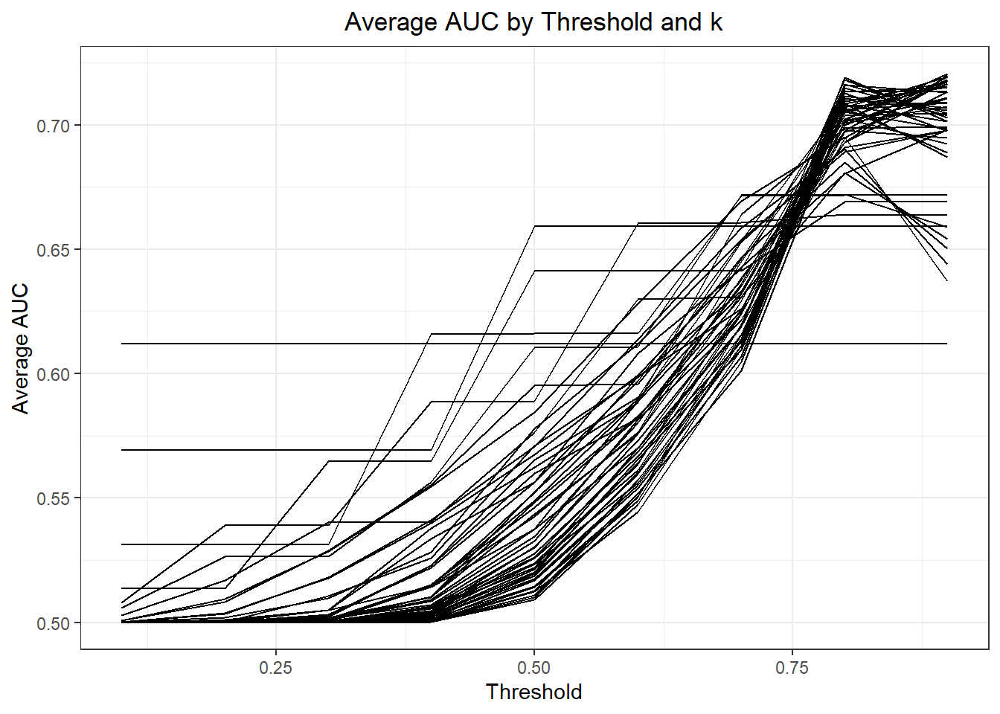
# Plot average AUC vs. k, with lines for each value of threshold
ggplot(avg_auc, aes(x = k, y = auc, group = threshold, color = threshold)) +
geom_line() +
xlab("k") +
ylab("Average AUC") +
ggtitle("Average AUC by k and Threshold") +
theme_bw() +
theme(plot.title = element_text(hjust = 0.5))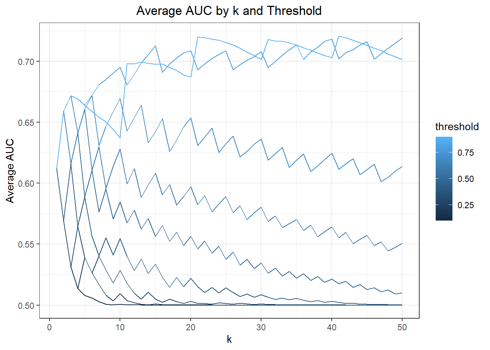
- Comment: According to the chart above the best hyper parameters for
Knn and Knn.cv is when threshold equals to 0.8 and 0.9, and when k
equals to 21 and 41
Model Selection (Linear Regression)
Looking at linear relationship between each variable
Determine its P value for significance
Fit the model and find out model’s potential against all models we chose
###################linear regression model
#Using the standardized data from above dataZ
datalm=data3
#split data into training set and test set (linear regression)
fit=glm(Attrition ~.,data=datalm,
family=binomial)
#summary(fit)
split=0.7
sample_rows <- sample(dim(datalm)[1], dim(datalm)[1] * split)
train_samplelm <- datalm[sample_rows, ]
test_samplelm <- datalm[-sample_rows, ]
lmprob=predict(fit,test_samplelm,type="response")
lmprob=ifelse(lmprob>0.3,1,0)
#confusionMatrix(table(lmprob,test_samplelm$Attrition))
#a=rocit(score=as.numeric(as.factor(lmprob)),class=as.numeric(test_samplelm$Attrition))
#a$AUC
#plot(a)
lm_model = data.frame(iteration = integer(),
auc = numeric(),
threshold = numeric(),
Sensitivity = numeric(),
Specificity = numeric(),
stringsAsFactors = FALSE)
rownames(lm_model)=NULL
for (i in 1:1000) {
split = 0.7
sample_rows <- sample(dim(datalm)[1], dim(datalm)[1] * split)
train_samplelm <- datalm[sample_rows, ]
test_samplelm <- datalm[-sample_rows, ]
fit <- glm(Attrition ~ Department + DistanceFromHome + EnvironmentSatisfaction +
JobInvolvement + JobSatisfaction + MaritalStatus + OverTime + WorkLifeBalance +
YearsAtCompany + YearsInCurrentRole + YearsWithCurrManager,
data = train_samplelm, family = binomial)
for (threshold in seq(0.1, 0.6, 0.1)){
lmprob <- predict(fit, test_samplelm, type = "response")
lmprob_class <- ifelse(as.data.frame(lmprob)[,1] > threshold, "1", "0")
cm_lm <- confusionMatrix(table(as.factor(lmprob_class), test_samplelm$Attrition))
a <- rocit(score = as.numeric(as.factor(lmprob_class)), class = as.numeric(test_samplelm$Attrition))$AUC
lm_model <- rbind(lm_model, data.frame(iteration = i, auc = a, threshold = threshold,
Sensitivity = cm_lm$overall[1], Specificity = cm_lm$overall[2]))
}
}
lm_model_data=lm_model %>% group_by(threshold) %>% summarise(mean_auc=mean(auc))
ggplot(data = lm_model_data, aes(x = threshold, y = mean_auc)) +
geom_line()+ggtitle("Best Average Result By Threshold")+ylab("Average AUC")+xlab("Threshold")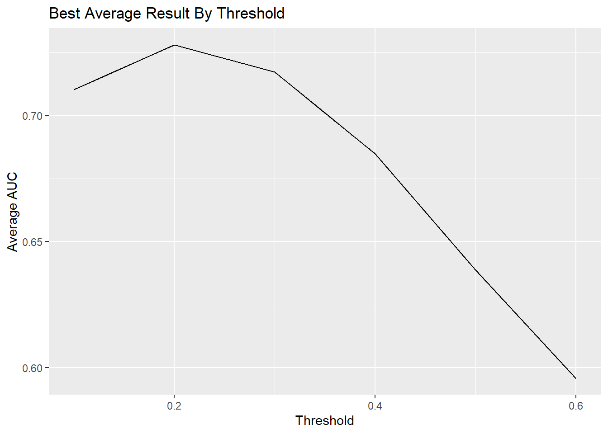
fit=glm(Attrition ~.,data=datalm,
family=binomial)
#summary(fit)
split=0.7
sample_rows <- sample(dim(datalm)[1], dim(datalm)[1] * split)
train_samplelm <- datalm[sample_rows, ]
test_samplelm <- datalm[-sample_rows, ]
lmprob=predict(fit,test_samplelm,type="response")
lmprob=ifelse(lmprob>0.2,1,0)
#confusionMatrix(table(lmprob,test_samplelm$Attrition))
#a=rocit(score=as.numeric(as.factor(lmprob)),class=as.numeric(test_samplelm$Attrition))
#a$AUC
#plot(a)- Comment: selecting threshold 0.2 for best average result.
Ensemble Models
Selecting the best performing models from the above.
Ensemble two or more through majority voting system.
Tune in for the best results and get prepared for new data prediction.
#ensemble knn.cv and naive bayes together through majority vote
data3=data2
sample_rows <- sample(dim(data3)[1], dim(data3)[1] * 0.7)
train_sample <- data3[sample_rows, ]
test_sample <- data3[-sample_rows, ]
knncv <- knn.cv(train = data3[,1:17], cl = as.numeric(data3$Attrition), k =31, prob = TRUE)
probs = ifelse(knncv == "0",attributes(knncv)$prob, 1- attributes(knncv)$prob)
NewClass = ifelse(probs > 0.9, "0", "1")
#table(NewClass,data3$Attrition)
#confusionMatrix(table(NewClass,data3$Attrition))
#a=rocit(score=as.numeric(as.factor(NewClass)),class=as.numeric(data3$Attrition))
#a$AUC
#plot(a)
nb3model=naiveBayes(Attrition~.,data=data3 )
nb3modelpred=predict(nb3model,data3[,1:17],type = "raw")
nb3modelclass <- ifelse(nb3modelpred[,1] > 0.6, "0", "1")
#confusionMatrix(table(nb3modelclass,data3$Attrition))
#a=rocit(score=as.numeric(as.factor(nb3modelclass)),class=as.numeric(data3$Attrition))
#a$AUC
#plot(a)
ensembleknncv <- ifelse(nb3modelclass == 0 & NewClass == 0, 0,
ifelse(nb3modelclass == 1 & NewClass == 1, 1, NewClass))
#confusionMatrix(table(ensembleknncv,data3$Attrition))
#a=rocit(score=as.numeric(as.factor(ensembleknncv)),class=as.numeric(data3$Attrition))
#a$AUC
#plot(a)Predict (Attrition)
Loading new data set “CaseStudy2CompSet No Attrition.csv”
Pre-processing new data sets and standardized all new data sets with the same scale
Selecting features that were important during training sets
Fit the best model that were selected above and ensemble the result
Write out the predictions in “FinalCompData”
#Predict Competition Set No Attrition
#Pre processing new data
CompData=read.csv(file = "CaseStudy2CompSet No Attrition.csv")
CompData$Attrition=0
CompData1 <- CompData %>%
mutate_if(is.character, as.factor) %>%
mutate_if(is.factor, ~as.integer(factor(.))-1)
CompData1=predict(preproc,CompData1)
CompData1=CompData1[,Ttest$variable]
#head(CompData1)
#means = apply(data3[, 1:17], 2, mean)
#sds = apply(data3[, 1:17], 2, sd)
#CompData1_scaled <- scale(CompData1, center = unname(means), scale = unname(sds))
#Predict using NB
nb_comp=predict(nb3model,CompData1,type = "raw")
nb_comp_class <- ifelse(nb_comp[,1] > 0.6, "0", "1")
#predict using KNN
knn_comp <- knn(data3[,1:17],CompData1, data3$Attrition, k =41, prob = TRUE)
probs_comp = ifelse(knn_comp == "0",attributes(knn_comp)$prob, 1- attributes(knn_comp)$prob)
NewClass_comp = ifelse(probs_comp > 0.9, "0", "1")
#Ensemble them together
ensemble_comp<- ifelse(nb_comp_class == 0 & NewClass_comp == 0, 0,
ifelse(nb_comp_class == 1 & NewClass_comp == 1, 1, NewClass_comp))
CompData$Results=ensemble_comp
FinalCompData=CompData[,c("ID","Results")]
FinalCompData$Results=ifelse(FinalCompData$Results==0,"No","Yes")
write.csv(FinalCompData,"FinalCompData", row.names = FALSE)Predict (MonthlyIncome)
Loading new data “CaseStudy2CompSet No Salary.csv”
Similarly process the data like the above
Selecting features that were important
Ran the model and write out the predictions in “Final_lm_data”
#linear regression predicting
fit_pre_glm=glm(MonthlyIncome ~ Age+Department+JobRole+DistanceFromHome+JobInvolvement+JobLevel+
MaritalStatus+OverTime+StockOptionLevel+TotalWorkingYears+WorkLifeBalance+
YearsAtCompany+YearsInCurrentRole+YearsWithCurrManager,data=data3)
predictedlm=predict(fit_pre_glm,newdata = data3)
#data3$MonthlyIncome
predictedlm = predictedlm * 6390.264 + 4597.696
residual=data1$MonthlyIncome-predictedlm
#sqrt(mean(residual^2))
data_scaled = data_scaled[, !(colnames(data_scaled) %in% c("EmployeeCount", "Over18", "StandardHours", "response"))]
fit_pre_glm=lm(MonthlyIncome ~.,data=data_scaled)
#summary(fit_pre_glm)
predictedlm=predict(fit_pre_glm,newdata = data_scaled)
#data3$MonthlyIncome
predictedlm = predictedlm * 6390.264 + 4597.696
residual=data1$MonthlyIncome-predictedlm
#sqrt(mean(residual^2))
#loading competition data
CompData_lm=read.csv(file = "CaseStudy2CompSet No Salary.csv")
CompData_lm1=CompData_lm %>%
mutate_if(is.character, as.factor) %>%
mutate_if(is.factor, ~as.integer(factor(.)) - 1)
CompData_lm1$MonthlyIncome=1
CompData_lm1=predict(preproc,CompData_lm1)
#CompData_lm <- CompData_lm[, colnames(data_scaled)[-which(colnames(data_scaled) == "MonthlyIncome")]]
predicted_comp=predict(fit_pre_glm,newdata = CompData_lm1)
predicted_comp=predicted_comp*6390.2643678 + 4597.6959741
CompData_lm$MonthlyIncome=predicted_comp
Final_lm_data=CompData[,c("ID","MonthlyIncome")]
write.csv(Final_lm_data,"Final_lm_data", row.names = FALSE)Conclusion & Recommendation
With all the analyses and observations above, here are some recommendations we provide for future:
Increasing employee monthly income is a potential retention strategy that should be considered, as it can improve employee motivation and job satisfaction. Financial incentives are a key factor in employee retention, and offering higher salaries or bonuses can help to reduce employee turnover.
Married workers are less likely to leave their jobs than single or divorced workers, due to greater financial stability. Hiring more married workers could be a viable retention strategy for companies seeking to reduce attrition rates
While overtime may be necessary in some industries or roles, it is important to be mindful of the potential negative effects on employee retention. Higher Overtime level can contribute to higher attrition rates
Implementing a longevity plan can be a valuable retention strategy, as it offers incentives for employees to stay with the company over the long term. This could include benefits such as paid time off, flexible schedules, or retirement savings plans.
Promotion opportunities are a crucial factor in employee retention, companies that offer clear guidelines for promotion and reward employees based on merit and performance are more likely to retain high-performing workers.
Fostering communication and relationships among employees is a proven retention strategy that can help to create a positive and supportive work environment. Companies that encourage team-building activities, open communication channels, and regular feedback sessions are more likely to improve employee satisfaction and engagement, which can lead to lower attrition rates.